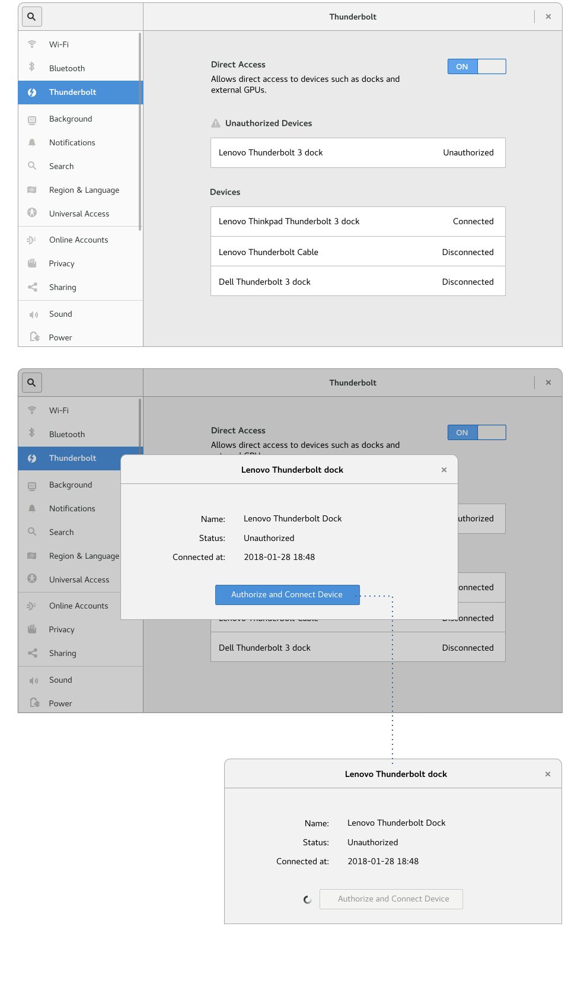
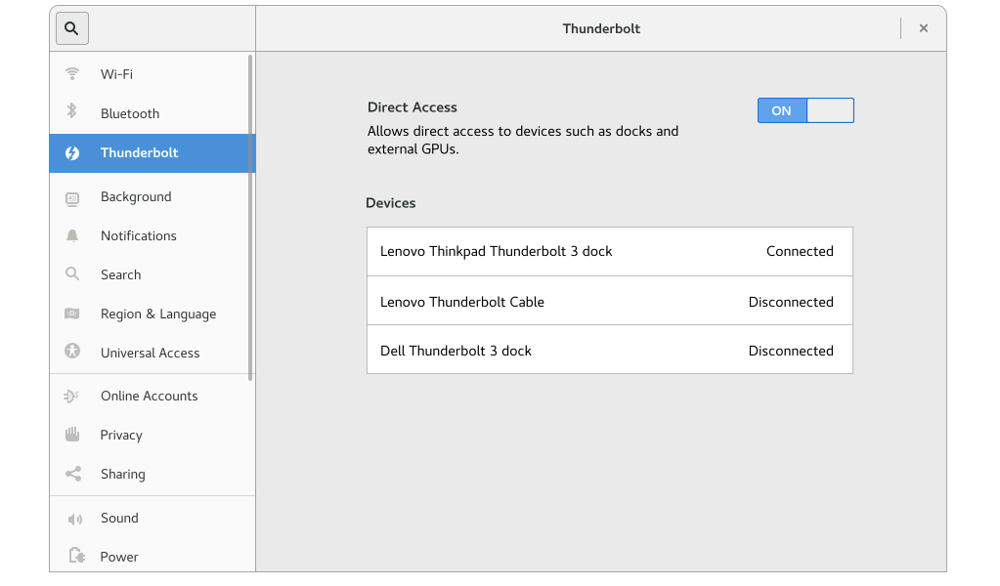
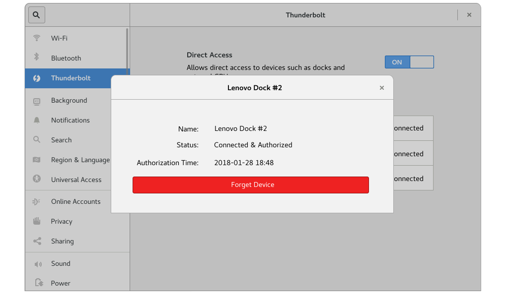
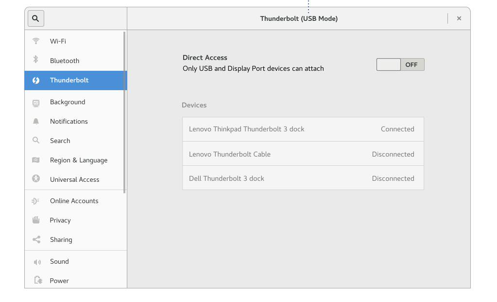
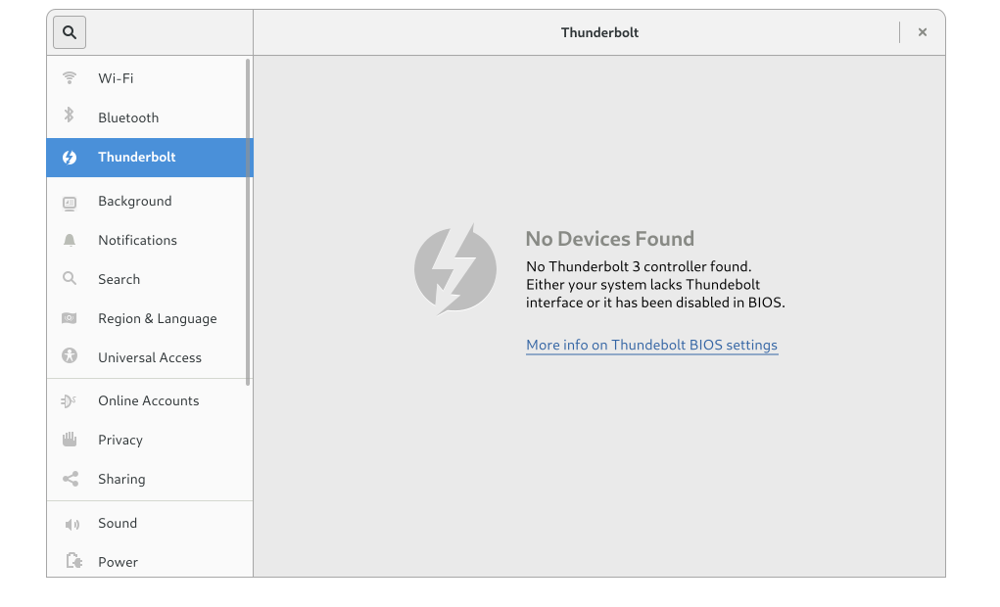
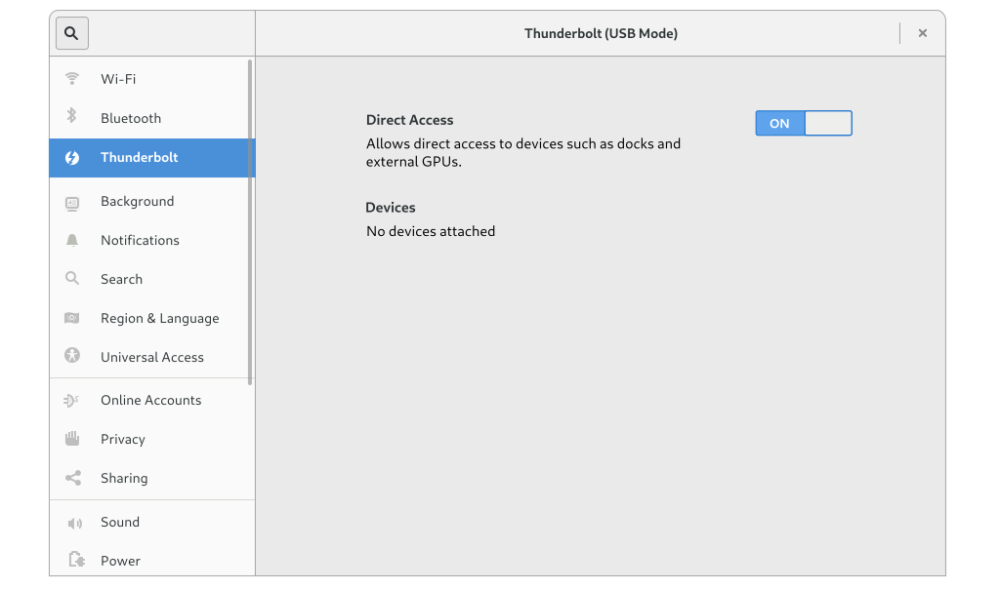

썬더볼트는 디스플레이, 저장 장치 등과 같은 다양한 외부 장치를 연결하는 데 유용하게 사용되는 기술입니다. USB와 달리 썬더볼트는 장치 또는 메모리에 대한 광범위한 액세스를 허용합니다. 썬더볼트를 활성화하는 데 10초 정도 걸릴 수 있습니다.
악성 장치가 PC에 부착되어 메모리를 복사하거나 악성 스파이웨어를 설치할 가능성이 있습니다.
예제 시나리오 1. 회의에서 프로젝터에 연결된 노트북이 디스플레이 기능을 제공하는 동안 악성 장치는 백그라운드에서 하드 드라이브의 복사본을 만들기 시작합니다. 2. 사무실에 노트북을 두고 가는 동안 누군가가 악성 장치를 부착하여 데이터를 복사합니다.
방화벽 접근 방식처럼 모든 장치를 잠재적으로 악성 장치로 취급하는 것은 바람직하지 않습니다. 그럴 경우 기본적으로 장치를 고장난 것처럼 간주합니다. "새 썬더볼트 장치를 허용합니까?"와 같은 권한 부여 모델은 이러한 결정을 내릴 수 있는 경험과 충분한 맥락이 없는 미숙한 사용자에게 장치 권한을 부여하는 부담을 덜어줍니다.
"oo 장치를 신뢰하십니까?"와 같은 질문은 단순히 사용자에게 책임/비난을 전가합니다. 이 질문은 장치가 수행하려는 작업에 대한 세부 정보를 제공하지 않습니다. 장치를 인증하려면 장치의 실행 목적을 알아야 합니다. 사용자에게 예/아니오 질문 대신 구체적인 동작을 요청할 수 있습니다. 프로젝터에 노트북을 연결하면 시스템이 디스플레이 설정 패널을 프레젠테이션 모드로 표시할 수 있으므로 감지된 프로젝터를 명시적으로 활성화해야 합니다. 프로젝터가 시스템 메모리 또는 저장 장치에 액세스하는 것을 방지할 수 없는 경우 광범위한 장치 차단 및 사용자 주도 화이트리스트는 위에서 설명한 공격에 효과적이지 않습니다.
기업 환경에서는 일반적으로 사용자가 관리자가 아닙니다. 이럴 경우 새 장치는 자동으로 사용 인증되지 않습니다. 대신 시스템 관리자로 인증하고 명시적으로 장치를 인증할 수 있도록 설정 패널에서 트리거됩니다. 그러나 기업 환경에서는 *boltctl* 유틸리티를 사용하여 원격으로 수행할 가능성이 더 높습니다.
여행 중 악성 장치의 위험을 줄이기 위해서 썬더볼트는 성능은 조금 떨어지지만 더 안전한 DisplayPort/USB 모드로 전환합니다. 그러나 BIOS 보안 모드에 이를 노출시키는 것을 권장하지 않습니다. 대신 완전히 제한된 접근 설정을 여행자의 환경에 사용할 수 있습니다.
썬더볼트 완전 접근 기본값
썬더볼트 완전 접근 기본값의 장치 상세 정보
Paranoid 모드

일반적으로 하드웨어가 없을 때 구성할 항목을 노출하지 않는 것이 좋지만, 현재는 Bluetooth 컨트롤러가 없는 시스템의 경우 빈 상태를 표시합니다. 썬더볼트가 완전히 누락된 것 외에도 사용자가 BIOS에서 직접 접근할 수 없도록 선택했을 수 있습니다. 이 경우 "빈 상태"가 상황을 전달하고, USB/DP 대체 BIOS 설정을 설명하는 문서 링크를 제공할 수 있습니다. 컨트롤러가 없는 경우
장치가 부착되지 않은 경우
